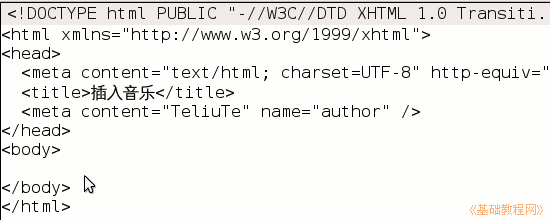

KompoZer操作基础教程
作者：Teliute 来源：基础教程网
六、插入音乐 返回目录 下一课这一节我们来学习在页面插入音乐，通过一个播放器来播放和控制音乐，常见的音乐格式有mp3、wma、rm等，下面我们来看一个练习；
1、启动KompoZer
1）点左上角菜单“应用程序－编程－KompoZer”，就可以启动KompoZer程序；
2）点菜单“格式－页面标题”，修改标题为& ldquo;插入音乐”，然后点菜单“文件－保存”命令，以“yinyue.html”保存到qqc文件夹中；
2、插入音乐
1）在站点侧栏中，点新建文件夹按钮，在出来的对话框中输入 music，这个文件夹也在 qqc 里，用来存放音乐；
2）最小化 KompoZer，找一首音乐复制到music文件夹里，文件名要改成英文，
本课images文件夹里有一首 olive.mp3 ；
3）回到KompoZer里，在左边刷新一下站点(点两下加号也行)，看看新建的music文件夹；
4）保存一下文件，点下边的标签“源代码”，进入到代码窗口里面(进入“拆分”也可以)；
5）在上面代码的最后一行里找到</body></html>，在</body>前面点一下鼠标左键，然后按两下回车键，中间出来一行空白；

6）在空行里输入下面的代码，可以复制粘贴进去，红色为音乐地址，这儿是相对地址；
7）保存一下文件，点浏览按钮，听一听音乐效果；
本节学习了KompoZer中插入音乐的基本方法，如果你成功地完成了练习，请继续学习下一课内容；
本教程由86团学校TeliuTe制作|著作权所有
基础教程网：http://teliute.org/
美丽的校园……
转载和引用本站内容，请保留作者和本站链接。